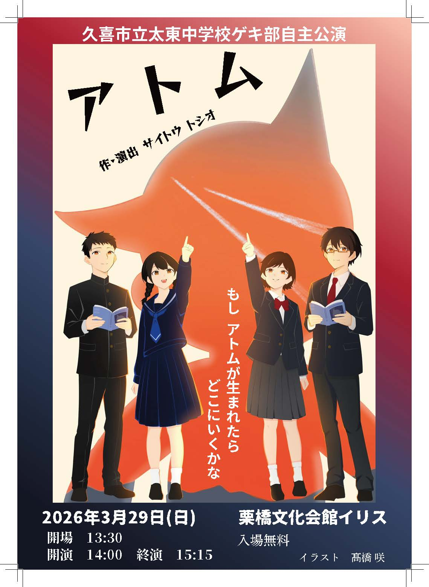
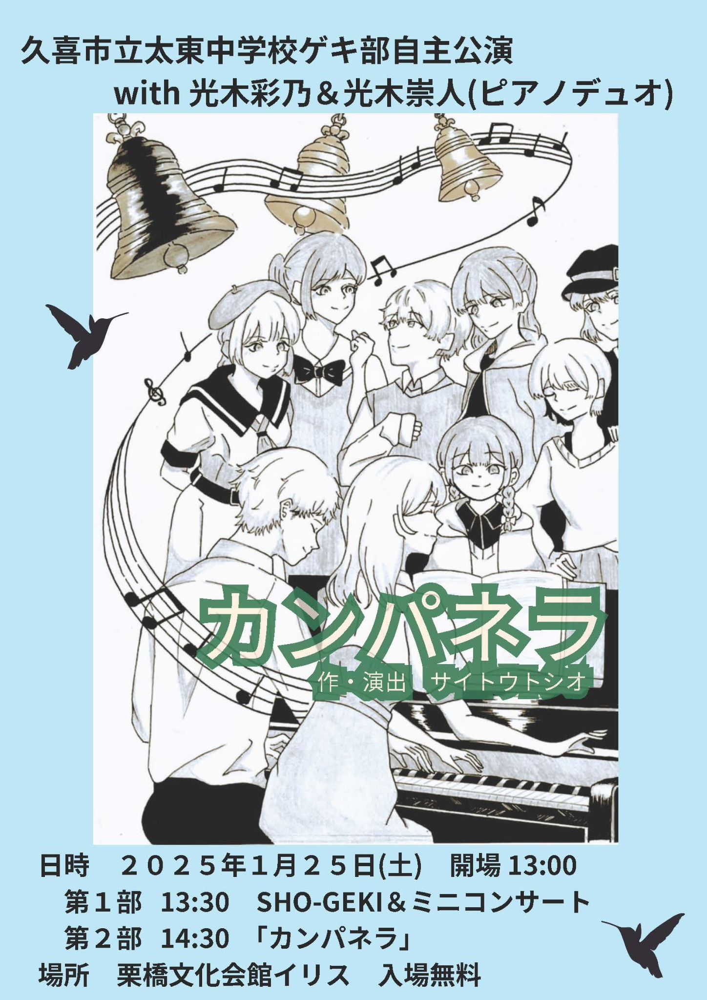
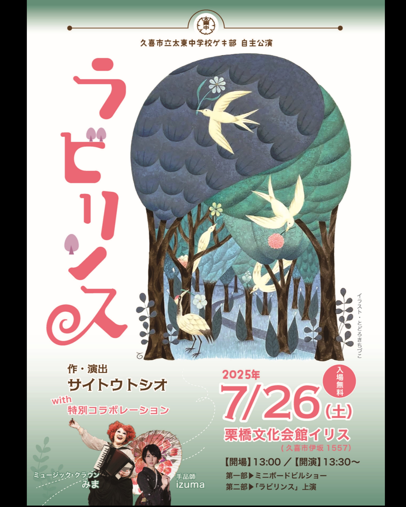

7月26日（日）／久喜市立太東中学校ゲキ部 自主公演
怪談の多い図書館
休館日の図書館を訪れた森本静花は、上演準備中の『怪談の多い図書館』と出会う。現実と劇の世界が重なり始め、静花は妖怪・天邪鬼をめぐる物語の真実へ近づいていきます。
日時：2026年7月26日（日）開場 13:30／開演 14:00
会場：栗橋文化会館イリス
入場：無料
作：サイトウトシオ illustration：髙橋咲

NEWS
UPCOMING STAGE
これから上演予定の公演を、開催日順にまとめました。新しい作品紹介は下の「レパートリー」でご覧いただけます。
7月26日（日）／久喜市立太東中学校ゲキ部 自主公演
休館日の図書館を訪れた森本静花は、上演準備中の『怪談の多い図書館』と出会う。現実と劇の世界が重なり始め、静花は妖怪・天邪鬼をめぐる物語の真実へ近づいていきます。
日時：2026年7月26日（日）開場 13:30／開演 14:00
会場：栗橋文化会館イリス
入場：無料
作：サイトウトシオ illustration：髙橋咲

7月30日（木）／申込不要
絵本ドラマリーディングに、プロマジシャン・ザッキーによる「モノガタリマジック」が加わる特別ステージです。
日時：2026年7月30日（木）開場 13:30／開演 14:00
会場：ブックハウスカフェ ひふみ
入場：無料・申込不要

7月31日（金）／要申込み
自由でにぎやかな図書館「カラーズ」を舞台に、多様性、平和、未来への願いを、演劇とマジックで描きます。
日時：2026年7月31日（金）13:00〜／15:00〜
会場：ブックハウスカフェ 2階 ひふみ
参加費：大人 1,500円／中高生 1,000円／小学生 500円

8月18日（火）／久喜市立中央図書館 休館日特別公演
『怪談の多い図書館』は、久喜市立中央図書館の休館日に、図書館全体を舞台として上演するために創作された作品です。8月18日は、その本来の舞台である中央図書館で上演します。
日時：2026年8月18日（火）13:30〜15:30
会場：久喜市立中央図書館
定員：90人（申込先着順・座席60人／立見30人）
申込：8月7日（金）9:00〜 申込フォーム（WEB）にて受付
ABOUT
本のある場所が 舞台になる
図書館、書店、まちライブラリーなど、本のある場所を舞台に、本に関係する劇を上演する取り組みです。
劇を通して、人と本、人と人がつながり、新しい出会いが生まれます。
REPERTOIRE
ビブリオ劇場の作品は、図書館・書店・地域の場で再演されながら育っていきます。物語ごとの色合いが伝わるよう、フライヤーや作品イメージとともに紹介します。
REPERTOIRE 01
図書館に棲む妖怪たちが登場する怪談劇。休館日の図書館を本来の舞台として創作された、現在の中心作品です。
REPERTOIRE 02
自由でにぎやかな図書館を舞台に、多様性、平和、未来への願いを演劇とマジックで描きます。

REPERTOIRE 03
「生命とは何か」という問いを、少年とロボットの物語を通して舞台に立ち上げる作品です。

REPERTOIRE 04
ピアノと演劇が響き合い、物語と音楽を通して平和への願いを届ける作品です。

REPERTOIRE 05
図書館全体を舞台に、本の迷宮をめぐるビブリオ劇場の原点となった作品。演劇・音楽・マジックが出会います。
PICTURE BOOK DRAMA READING
ビブリオ劇場のもう一つの柱
絵本が、舞台になる。
絵本の言葉と絵を大切に、声と身体で届けます。
一冊の絵本を、読み聞かせの親しみやすさと演劇の身体表現を組み合わせて上演します。基本的に脚色はせず、絵本そのものの言葉と絵を尊重します。
PROFILE
久喜市立太東中学校ゲキ部の演劇指導を担当。図書館・書店・学校など、本のある場所と中学生を演劇でつなぐ活動を行っています。
本のある場所を舞台に、物語の魅力を演劇で届ける活動を続けています。